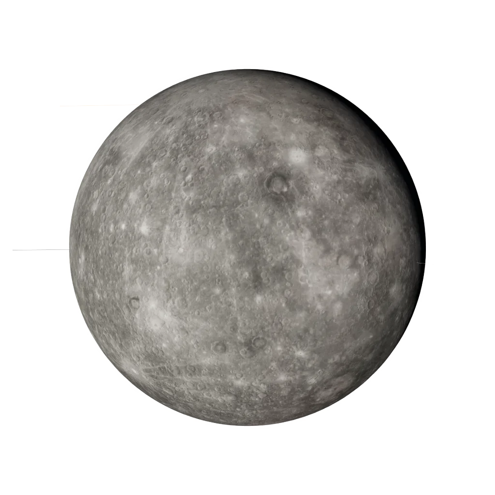

Sign guide · Air · Mutable
Gemini
May 21 – June 20
“I think”
- Element
- Air
- Modality
- Mutable
- Ruler
- Mercury
- Symbol
- The Twins
Gemini in today’s sky
Calculated from today’s sky with the same planet model as the 3D Observatory. Not a live feed.
Today’s Gemini reading is calculated in your browser from real planetary positions. If this text remains, turn on JavaScript to see it, or read the full Gemini guide below.
About Gemini
Gemini is the zodiac's messenger — quick, curious, and permanently in motion between two points. Ruled by Mercury, this sign lives through language, connection, and the exchange of ideas. A Gemini mind runs several threads at once and is bored by anything that runs only one. Variety is not a preference; it is oxygen.
The astronomy of Gemini
The factual layer: where Gemini sits on the ecliptic.
Element, ruler, ecliptic band
the element of the mind — air signs live in ideas, language and connection.
the adapting mode — mutable signs flex, blend and prepare the way for change.

Mercury, the planet of thought, language and exchange.
Mercury · our engine render
Gemini is the 60°–90° band of the zodiac circle. The Sun crosses it around 21 May – 20 Jun each year. The exact day shifts by about a day from year to year, which is why the dates are approximate.
Gemini in your chart
Most people meet Gemini as a “star sign”. In a real birth chart it can appear in three very different places, and each one means something distinct.
Sun in Gemini
Your core self: the “Gemini side” people mean when they ask your sign. It shapes your basic character and what makes you feel most yourself.
Moon in Gemini
Your inner, emotional world: how you feel, comfort yourself and respond in private. Two people with a Gemini Moon share an emotional language, whatever their Sun sign.
Rising (Ascendant) in Gemini
How you meet the world: your outward style and first impression. Your Rising is set by the exact time and place you were born, so it needs your birth time to know.
Gemini strengths & challenges
Strengths
- Wit and verbal brilliance
- Adaptability in any room
- Genuine curiosity about everyone
- Learning at extraordinary speed
Challenges
- Scattered attention and unfinished projects
- Restlessness mistaken for inconsistency
- Talking around feelings instead of through them
- A low boredom threshold
In life
Love
Gemini falls in love with minds first. Conversation is this sign's true intimacy — a partner who cannot keep up verbally will not keep a Gemini long. What Gemini offers is lightness, humour, and perpetual novelty; what it must learn is that depth requires staying when the conversation gets difficult.
Traditionally a good match with Libra, Aquarius and Aries. See two-chart compatibility: Sun signs alone are not the whole story.
Career, friendship, shadow, growth
Career
Gemini belongs in the flow of information: journalism, teaching, marketing, translation, broadcasting, tech. Two careers at once is not unusual — it may be necessary. The ideal Gemini role changes weekly and involves talking to people who know things.
Friendship
A Gemini friend is the most entertaining person in your contacts — the one who sends the funny link at midnight, knows a little about everything, and can talk to anyone at the party. This sign collects people generously and connects them to each other, acting as the social switchboard of any group. The work for a Gemini friendship is depth: staying present through the unglamorous parts, not just the sparkling ones, and remembering that some friends need your attention more than your wit.
Shadow
The Gemini shadow lives in the gap between the two twins — the part that talks instead of feels, scatters instead of commits, and uses cleverness to avoid the things it does not want to face. Restlessness becomes flightiness; charm becomes a mask; the famous duality splits into a self that says one thing and does another. The growth edge is integration: letting the two voices become one honest one.
Growth
The inner path for Gemini is from information to wisdom — learning that knowing a little about everything is not the same as understanding anything deeply. This sign grows by finishing what it starts, by sitting with a single subject long enough for it to take root, and by turning its restless attention inward to hear what it actually feels. When Gemini stops fleeing into the next distraction, the scattered brilliance becomes real insight.
Gemini reference
Dates, ruler, FAQ
Gemini at a glance
- Symbol
- The Twins
- Dates
- May 21 – June 20
- Element
- Air
- Modality
- Mutable
- Ruling planet
- Mercury
- Polarity
- Masculine / Yang
- Body part
- The hands, arms and lungs
- Tarot
- The Lovers
- Keyword
- “I think”
Frequently asked
What are the Gemini zodiac dates?
Gemini season runs May 21 – June 20. People born in this window have their Sun in Gemini.
What element and ruling planet is Gemini?
Gemini is a Air sign of the Mutable modality, ruled by Mercury. Its symbol is The Twins.
Which signs are most compatible with Gemini?
Gemini is traditionally most compatible with Libra, Aquarius, Aries. Full synastry depends on the complete birth charts of both people, not Sun signs alone.
What are the main Gemini personality traits?
Gemini is known for being wit and verbal brilliance, adaptability in any room, genuine curiosity about everyone. Its growth edges include scattered attention and unfinished projects and restlessness mistaken for inconsistency. As a Mutable Air sign ruled by Mercury, Gemini carries the keyword “I think”.
Is Gemini rare?
No zodiac sign is truly rare: every sign covers about a month, so each accounts for roughly one twelfth of birthdays. Small global birth-rate variations by season make some signs marginally more common than others, but Gemini is no rarer than any other Sun sign. Your full birth chart, however, is genuinely one of a kind.
What is the Gemini symbol and ruling body?
The symbol of Gemini is The Twins, and it is ruled by Mercury. Its polarity is masculine / yang, it is traditionally associated with the hands, arms and lungs, and its corresponding tarot card is The Lovers.
Every sign
Tap a tile to open that sign’s guide and today’s sky.